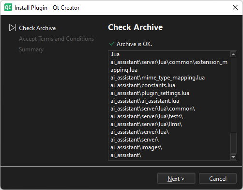
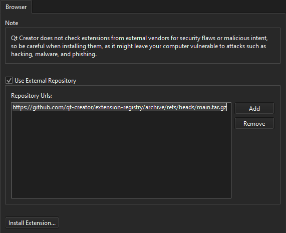

Install extensions
You can install compatible extensions either from the Qt Creator extension registry or from other external repositories.
To install extensions from the extension registry:
- Go to Extensions.

- Select an extension.
- Select Install.
- Follow the instructions of the wizard to check the archive and to accept the terms and conditions of the extension vendor.

If you have an installation package, you can drag it to the Extensions mode to start the installation.
Install extensions from external repositories
To add URLs of external repositories:
- Go to Preferences > Extensions.

- Select Use external repository.
- In Repository URLs, enter the URL of an external repository.
- Select OK.
- In the Extensions mode, select Use external repository.
To add several repositories, select Add.
Update extensions
The Extensions mode highlights updated extensions. To install updates, select Update.
Remove extensions
To remove an installed extension, select Remove.
Security considerations
Qt Creator does not check extensions from external vendors for security flaws or malicious intent, so be careful when installing them, as it might leave your computer vulnerable to attacks such as hacking, malware, and phishing.
Before you install an extension from an external vendor:
- Check that the extension is compatible with your Qt Creator version and other extensions that you install. You can find this information in the description of the extension in the Extensions mode.
- Check what other users are saying about the extension and how they rate it.
- Make sure the vendor is reputable and known for creating high-quality extensions.
- Check that the extension package was recently updated. Outdated extensions present a bigger risk.
- Check that the extension has good documentation and other means of support.
- Check that the extension mostly has features that you need. All extensions that are loaded on start make Qt Creator start a bit slower.
See also Activate extensions and Manage extensions.